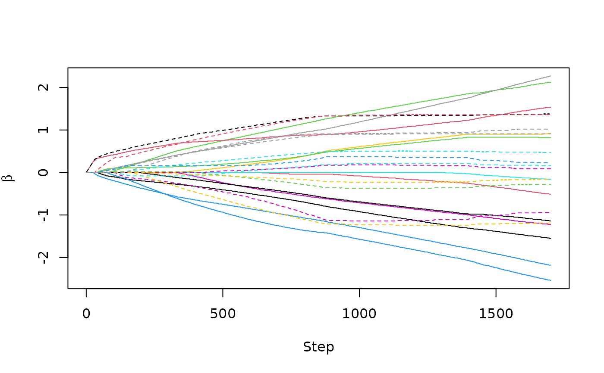

This function plots either the coefficient path, the AIC, the cAIC, the BIC,
or the log-likelihood for a fitted curegmifs or cureem object.
This function produces a lollipop plot of the coefficient estimates for a
fitted cv_curegmifs or cv_cureem object.
Arguments
- x
a
mixturecureobject resulting fromcuregmifsorcureem,cv_curegmifsorcv_cureem.- type
a case-sensitive parameter indicating what to plot on the y-axis. The complete list of options are:
"trace"plots the coefficient path for the fitted object (default)."AIC"plots the AIC against step of model fit."mAIC"plots the modified AIC against step of model fit."cAIC"plots the corrected AIC against step of model fit."BIC", plots the BIC against step of model fit."mBIC"plots the modified BIC against step of model fit."EBIC"plots the extended BIC against step of model fit."logLik"plots the log-likelihood against step of model fit.
This option has no effect for objects fit using
cv_curegmifsorcv_cureem.- xlab
a default x-axis label will be used which can be changed by specifying a user-defined x-axis label.
- ylab
a default y-axis label will be used which can be changed by specifying a user-defined y-axis label.
- label
logical. If TRUE the variable names will appear in a legend. Applicable only when
type = "trace". Be reminded that this works well only for small to moderate numbers of variables. For many predictors, the plot will be cluttered. The variables may be more easily identified using thecoeffunction indicating the step of interest.- main
a default main title will be used which can be changed by specifying a user-defined main title. This option is not used for
cv_curegmifsorcv_cureemfitted objects.- ...
other arguments.
Examples
library(survival)
withr::local_seed(1234)
temp <- generate_cure_data(n = 100, j = 10, n_true = 10, a = 1.8)
training <- temp$training
fit <- curegmifs(Surv(Time, Censor) ~ .,
data = training, x_latency = training,
model = "weibull", thresh = 1e-4, maxit = 2000,
epsilon = 0.01, verbose = FALSE
)
plot(fit)
